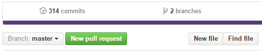

Il manuale OGD è basato sul modello Wiki: chiunque può contribuirvi, anche se perlopiù si tratterà di persone responsabili per la loro organizzazione della pubblicazione di informazioni su opendata.swiss. Le proposte di modifica o di nuovi temi e le correzioni possono essere inserite direttamente sulle singole pagine.
Modifica dei contenuti
Prima di iniziare, occorre verificare nella lista delle domande pendenti se la stessa proposta non sia già stata avanzata da qualcun’altro. Se non è il caso, procedere nel modo seguente:
- Creare un account su GitHub ed effettuare il login. Leggere attentamente le spiegazioni.
- Tornare al manuale OGD e, sulla pagina che si desidera modificare, cliccare su «Modifica».
- Apportare le modifiche per mezzo di un semplice programma di elaborazione testi o del linguaggio di programmazione Markdown, segnalando i cambiamenti effettuati nel modulo in fondo alla pagina.
- Una volta soddisfatti del risultato, cliccare su «New pull request». Le modifiche vengono salvate come nuova versione della pagina, chiamata «fork» in GitHub.
- Ora esamineremo i vostri cambiamenti, e invia una comunicazione via e-mail non appena la nuova versione è on-line.

Supporto
- Per maggiori informazioni su GitHub consultare la pagina di aiuto.
- Il linguaggio di programmazione Markdown è illustrato qui.
- Chi necessitasse di supporto è pregato di contattarci.
Ultimi aggiornamenti
Qui sotto potete vedere un live record di aggiunte e modifiche da GitHub: